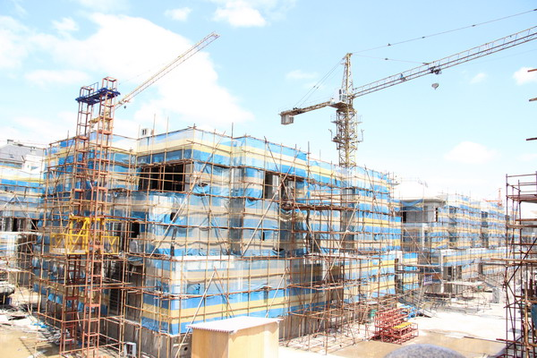

建设工程质量管理条例
- 房地产开发建设
(1)房地产开发项目的确定。符合规划;应当坚持旧区改建和新区建设相结合的原则。
(2)房地产开发用地。房地产开发用地应当以出让方式取得。
(3）房地产开发项目的建设。房地产开发项目资本金占项目总投资的比例不得低35%。
房地产开发项目的开发建设应当统筹安排配套基础设施，并根据先地下、后地上的原则实施。
(4)房地产开发项目的竣工验收。房地产开发项目未经验收或者验收不合格的，不得交付使用。

- 房地产经营
- 建设单位的质量责任和义务。
（1)招标阶段。建设单位应依法进行招标和发包。不允许肢解发包，不得迫使
承包方以低于成本价竞争。不得任意压缩合理工期。
(2)开工准备阶段。办理工程质量监督手续;取得施工许可证;施工图设计文件
须经审查批准方可使用;实行监理的建设工程，委托具有相应资质等级的工程监理单位进行监理。
(3)施工阶段。建设单位应向有关招标提供与建设工程有关的真实、准确、齐
全的原始资料。不允许在装修和使用过程中擅自变动房屋建筑主体和承重结构。
房地产项目的转让。转让人和受让人应当自土地使用权变更登记手续办理完毕之日起30日内备案。
房地产开发企业转让房地产开发项目时，尚未完成拆迁补偿安置的，有关的权利、
、义务随之转移给受让人。项目转让人应当书面通知被拆迁人。

- 建设单位的质量责任和义务。
- 返回主页